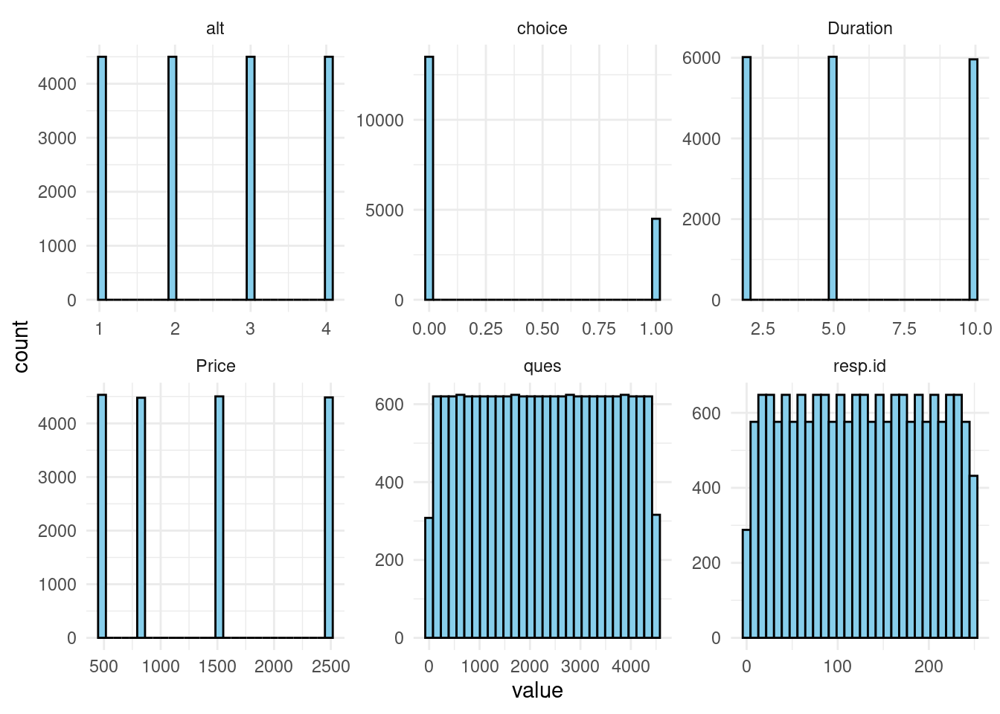
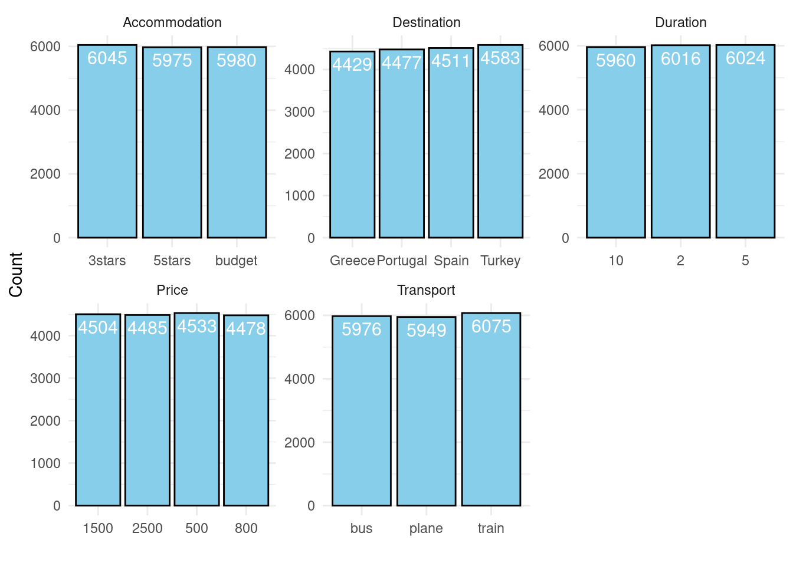

── Attaching core tidyverse packages ──────────────────────── tidyverse 2.0.0 ──
✔ dplyr 1.1.4 ✔ readr 2.1.5
✔ forcats 1.0.0 ✔ stringr 1.5.1
✔ ggplot2 3.5.1 ✔ tibble 3.2.1
✔ lubridate 1.9.3 ✔ tidyr 1.3.1
✔ purrr 1.0.2
── Conflicts ────────────────────────────────────────── tidyverse_conflicts() ──
✖ dplyr::filter() masks stats::filter()
✖ dplyr::lag() masks stats::lag()
ℹ Use the conflicted package (<http://conflicted.r-lib.org/>) to force all conflicts to become errors
Loading required package: dfidx
Attaching package: 'dfidx'
The following object is masked from 'package:stats':
filter
Attaching package: 'MASS'
The following object is masked from 'package:dfidx':
select
The following object is masked from 'package:dplyr':
selectproject_report
#### 1- Exploratory Data Analysis EDA ####
# Check the data
head(vacation) resp.id ques alt Price Duration Accommodation Transport Destination choice
1 1 1 1 500 10 budget train Greece 0
2 1 1 2 500 10 budget plane Greece 0
3 1 1 3 500 5 5stars bus Turkey 1
4 1 1 4 2500 2 5stars train Spain 0
5 1 2 1 800 10 5stars plane Greece 0
6 1 2 2 1500 10 5stars plane Turkey 0summary(vacation) resp.id ques alt Price Duration
Min. : 1.0 Min. : 1 Min. :1.00 Min. : 500 Min. : 2.000
1st Qu.: 63.0 1st Qu.:1126 1st Qu.:1.75 1st Qu.: 500 1st Qu.: 2.000
Median :125.5 Median :2250 Median :2.50 Median : 800 Median : 5.000
Mean :125.5 Mean :2250 Mean :2.50 Mean :1323 Mean : 5.653
3rd Qu.:188.0 3rd Qu.:3375 3rd Qu.:3.25 3rd Qu.:1500 3rd Qu.:10.000
Max. :250.0 Max. :4500 Max. :4.00 Max. :2500 Max. :10.000
Accommodation Transport Destination choice
Length:18000 Length:18000 Length:18000 Min. :0.00
Class :character Class :character Class :character 1st Qu.:0.00
Mode :character Mode :character Mode :character Median :0.00
Mean :0.25
3rd Qu.:0.25
Max. :1.00 skim(vacation)| Name | vacation |
| Number of rows | 18000 |
| Number of columns | 9 |
| _______________________ | |
| Column type frequency: | |
| character | 3 |
| numeric | 6 |
| ________________________ | |
| Group variables | None |
Variable type: character
| skim_variable | n_missing | complete_rate | min | max | empty | n_unique | whitespace |
|---|---|---|---|---|---|---|---|
| Accommodation | 0 | 1 | 6 | 6 | 0 | 3 | 0 |
| Transport | 0 | 1 | 3 | 5 | 0 | 3 | 0 |
| Destination | 0 | 1 | 5 | 8 | 0 | 4 | 0 |
Variable type: numeric
| skim_variable | n_missing | complete_rate | mean | sd | p0 | p25 | p50 | p75 | p100 | hist |
|---|---|---|---|---|---|---|---|---|---|---|
| resp.id | 0 | 1 | 125.50 | 72.17 | 1 | 63.00 | 125.5 | 188.00 | 250 | ▇▇▇▇▇ |
| ques | 0 | 1 | 2250.50 | 1299.07 | 1 | 1125.75 | 2250.5 | 3375.25 | 4500 | ▇▇▇▇▇ |
| alt | 0 | 1 | 2.50 | 1.12 | 1 | 1.75 | 2.5 | 3.25 | 4 | ▇▇▁▇▇ |
| Price | 0 | 1 | 1323.19 | 769.20 | 500 | 500.00 | 800.0 | 1500.00 | 2500 | ▇▁▃▁▃ |
| Duration | 0 | 1 | 5.65 | 3.30 | 2 | 2.00 | 5.0 | 10.00 | 10 | ▇▇▁▁▇ |
| choice | 0 | 1 | 0.25 | 0.43 | 0 | 0.00 | 0.0 | 0.25 | 1 | ▇▁▁▁▂ |
# Check for missing values
sum(is.na(vacation))[1] 0# Visualize Distributions of Numerical Variables
vacation %>%
select_if(is.numeric) %>%
gather() %>%
ggplot(aes(value)) +
geom_histogram(bins = 30, fill = "skyblue", color = "black") +
facet_wrap(~key, scales = "free") +
theme_minimal()
# The variables are not numeric, no point in this plot
# Number of respondents = 250
length(unique(vacation$resp.id))[1] 250# Number of questions per respondent = 18
table(vacation$resp.id) / 4
1 2 3 4 5 6 7 8 9 10 11 12 13 14 15 16 17 18 19 20
18 18 18 18 18 18 18 18 18 18 18 18 18 18 18 18 18 18 18 18
21 22 23 24 25 26 27 28 29 30 31 32 33 34 35 36 37 38 39 40
18 18 18 18 18 18 18 18 18 18 18 18 18 18 18 18 18 18 18 18
41 42 43 44 45 46 47 48 49 50 51 52 53 54 55 56 57 58 59 60
18 18 18 18 18 18 18 18 18 18 18 18 18 18 18 18 18 18 18 18
61 62 63 64 65 66 67 68 69 70 71 72 73 74 75 76 77 78 79 80
18 18 18 18 18 18 18 18 18 18 18 18 18 18 18 18 18 18 18 18
81 82 83 84 85 86 87 88 89 90 91 92 93 94 95 96 97 98 99 100
18 18 18 18 18 18 18 18 18 18 18 18 18 18 18 18 18 18 18 18
101 102 103 104 105 106 107 108 109 110 111 112 113 114 115 116 117 118 119 120
18 18 18 18 18 18 18 18 18 18 18 18 18 18 18 18 18 18 18 18
121 122 123 124 125 126 127 128 129 130 131 132 133 134 135 136 137 138 139 140
18 18 18 18 18 18 18 18 18 18 18 18 18 18 18 18 18 18 18 18
141 142 143 144 145 146 147 148 149 150 151 152 153 154 155 156 157 158 159 160
18 18 18 18 18 18 18 18 18 18 18 18 18 18 18 18 18 18 18 18
161 162 163 164 165 166 167 168 169 170 171 172 173 174 175 176 177 178 179 180
18 18 18 18 18 18 18 18 18 18 18 18 18 18 18 18 18 18 18 18
181 182 183 184 185 186 187 188 189 190 191 192 193 194 195 196 197 198 199 200
18 18 18 18 18 18 18 18 18 18 18 18 18 18 18 18 18 18 18 18
201 202 203 204 205 206 207 208 209 210 211 212 213 214 215 216 217 218 219 220
18 18 18 18 18 18 18 18 18 18 18 18 18 18 18 18 18 18 18 18
221 222 223 224 225 226 227 228 229 230 231 232 233 234 235 236 237 238 239 240
18 18 18 18 18 18 18 18 18 18 18 18 18 18 18 18 18 18 18 18
241 242 243 244 245 246 247 248 249 250
18 18 18 18 18 18 18 18 18 18 # Distribution of the response variable
table(vacation$alt[vacation$choice == 1]) # A bit left-sweked, right?
1 2 3 4
1137 1139 1117 1107 #it's balanced between the 4 options more or less (so no weird behavior)
# Check the frequencies of attributes
sapply(vacation[, 4:8], table) #it's balanced$Price
500 800 1500 2500
4533 4478 4504 4485
$Duration
2 5 10
6016 6024 5960
$Accommodation
3stars 5stars budget
6045 5975 5980
$Transport
bus plane train
5976 5949 6075
$Destination
Greece Portugal Spain Turkey
4429 4477 4511 4583 # Check the levels of the attributes
sapply(vacation[, 4:8], unique)$Price
[1] 500 2500 800 1500
$Duration
[1] 10 5 2
$Accommodation
[1] "budget" "5stars" "3stars"
$Transport
[1] "train" "plane" "bus"
$Destination
[1] "Greece" "Turkey" "Spain" "Portugal"# 432 unique combinations of attributes
# Covert to factor
vacation$Price <- as.factor(vacation$Price)
vacation$Duration <- as.factor(vacation$Duration)
vacation$Accommodation <- factor(vacation$Accommodation,
levels = c("budget", "3stars", "5stars"))
vacation$Transport <- as.factor(vacation$Transport)
vacation$Destination <- as.factor(vacation$Destination)
# Visualize Distributions of Categorical Variables
vacation %>%
select_if(is.factor) %>%
gather() %>%
ggplot(aes(value)) +
geom_bar(fill = "skyblue", color = "black") +
facet_wrap(~key, scales = "free") +
geom_text(stat = "count", aes(label = ..count..), vjust = 1.5, color = "white", size = 4) +
xlab("") +
ylab("Count") +
theme_minimal()Warning: attributes are not identical across measure variables; they will be
droppedWarning: The dot-dot notation (`..count..`) was deprecated in ggplot2 3.4.0.
ℹ Please use `after_stat(count)` instead.
# Create the design matrix
vacation_mlogit <- dfidx(vacation, idx = list(c("ques", "resp.id"), "alt"))
vacation_mlogit~~~~~~~
first 10 observations out of 18000
~~~~~~~
Price Duration Accommodation Transport Destination choice idx
1 500 10 budget train Greece 0 1:1
2 500 10 budget plane Greece 0 1:2
3 500 5 5stars bus Turkey 1 1:3
4 2500 2 5stars train Spain 0 1:4
5 800 10 5stars plane Greece 0 2:1
6 1500 10 5stars plane Turkey 0 2:2
7 500 5 3stars plane Spain 0 2:3
8 800 10 5stars plane Turkey 1 2:4
9 2500 5 3stars plane Spain 0 3:1
10 1500 5 budget bus Spain 0 3:2
~~~ indexes ~~~~
ques resp.id alt
1 1 1 1
2 1 1 2
3 1 1 3
4 1 1 4
5 2 1 1
6 2 1 2
7 2 1 3
8 2 1 4
9 3 1 1
10 3 1 2
indexes: 1, 1, 2 1. Introduction
Understanding consumer preferences is crucial for designing products and services that resonate with target audiences. Conjoint analysis is a widely used method for modeling decision-making processes, enabling researchers to quantify the importance of different product attributes and the trade-offs consumers are willing to make. By presenting respondents with hypothetical scenarios, this approach allows for a detailed exploration of how specific features influence choices.
This project focuses on vacation planning, a domain where consumer decisions are influenced by a range of factors, including price, duration, accommodation, transport, and destination. The goal of the analysis is to identify the key drivers of consumer preferences for vacation packages and to provide actionable insights for the travel and tourism industry. These insights can help businesses design offerings that better meet the needs and expectations of potential customers.
2. Data Collection and Methodology
The dataset for this study was provided by the course professor and is specifically designed to simulate consumer decision-making in vacation planning. It is organized in a long format, a standard structure for Choice-Based Conjoint (CBC) analysis, where:
Respondent ID (
resp.id): Identifies each participant.Choice Task ID (
ques): Identifies each decision-making scenario (choice task) presented to respondents.Alternative ID (
alt): Represents each vacation package alternative within a choice task.Attributes and Levels:
Price: Cost of the package (
$500,$800,$1500,$2500).Duration: Vacation length (e.g.,
2 days,5 days,10 days).Accommodation: Type of lodging (
budget,3-stars,5-stars).Transport: Mode of transport (
bus,train,plane).Destination: Vacation destination (
Greece,Turkey,Portugal,Spain).
Choice Indicator (
choice): A binary variable showing whether an alternative was selected (1) or not (0).
Each respondent faced multiple choice tasks, with each task consisting of several vacation package alternatives. Respondents selected their preferred package in each task, and only one alternative per task is marked as chosen. This structure is well-suited for CBC analysis, which directly models such decision-making processes.
Attaching package: 'kableExtra'The following object is masked from 'package:dplyr':
group_rows| resp.id | ques | alt | Price | Duration | Accommodation | Transport | Destination | choice |
|---|---|---|---|---|---|---|---|---|
| 1 | 1 | 1 | 500 | 10 | budget | train | Greece | 0 |
| 1 | 1 | 2 | 500 | 10 | budget | plane | Greece | 0 |
| 1 | 1 | 3 | 500 | 5 | 5stars | bus | Turkey | 1 |
| 1 | 1 | 4 | 2500 | 2 | 5stars | train | Spain | 0 |
| 1 | 2 | 1 | 800 | 10 | 5stars | plane | Greece | 0 |
| 1 | 2 | 2 | 1500 | 10 | 5stars | plane | Turkey | 0 |
| 1 | 2 | 3 | 500 | 5 | 3stars | plane | Spain | 0 |
| 1 | 2 | 4 | 800 | 10 | 5stars | plane | Turkey | 1 |
| 1 | 3 | 1 | 2500 | 5 | 3stars | plane | Spain | 0 |
| 1 | 3 | 2 | 1500 | 5 | budget | bus | Spain | 0 |
Maybe add an analysis like on slide 8~10
4. Data Description (Borto)
- Summary statistics of the data (optional if meaningful).
5. - Model Fitting (Ricardo)
This study aims to examine the relationship between consumer choice and product attributes, focusing on understanding why a consumer selects a particular package based on the characteristics of the options presented. To achieve this, we employ a discrete choice model, specifically a multinomial logit regression.
We begin by assessing the dataset, which captures respondents’ choices among four available alternatives. The dependent variable, choice, is a categorical variable with four levels. To appropriately model this type of data, we utilize a Multinomial Logit Model (MNL).
On an initial light analysis, the summary for our first model model1 has intuitive responses. As the price increases, the estimate for the attribute Price gains a more negative value. A deeper analysis is performed in the Results and Interpretations section.
The alternative-specific constants represent preferences for the positions of the alternatives within each question. Specifically, the parameters (Intercept):2, (Intercept):3, and (Intercept):4 quantify the preference for each position from left to right relative to the first position on the left.
The estimated MNL model indicates that these intercepts are very small and not statistically significant. To improve model parsimony and precision, we have chosen to exclude these intercepts from the analysis, thereby reducing the degrees of freedom.
Call:
mlogit(formula = choice ~ Price + Duration + Accommodation +
Transport + Destination, data = vacation_mlogit, method = "nr")
Frequencies of alternatives:choice
1 2 3 4
0.25267 0.25311 0.24822 0.24600
nr method
5 iterations, 0h:0m:1s
g'(-H)^-1g = 0.000165
successive function values within tolerance limits
Coefficients :
Estimate Std. Error z-value Pr(>|z|)
(Intercept):2 -0.026499 0.047689 -0.5557 0.5784
(Intercept):3 -0.017440 0.047947 -0.3637 0.7160
(Intercept):4 -0.054414 0.048031 -1.1329 0.2573
Price800 -0.408342 0.052314 -7.8056 5.995e-15 ***
Price1500 -0.788285 0.054336 -14.5076 < 2.2e-16 ***
Price2500 -1.214318 0.058311 -20.8250 < 2.2e-16 ***
Duration5 -1.135638 0.050023 -22.7025 < 2.2e-16 ***
Duration10 -0.766345 0.047290 -16.2053 < 2.2e-16 ***
Accommodation3stars 0.323850 0.051226 6.3220 2.583e-10 ***
Accommodation5stars 1.299931 0.050373 25.8062 < 2.2e-16 ***
Transportplane 0.496223 0.047190 10.5155 < 2.2e-16 ***
Transporttrain -0.222848 0.049439 -4.5075 6.560e-06 ***
DestinationPortugal 1.649633 0.060748 27.1552 < 2.2e-16 ***
DestinationSpain 1.139032 0.060270 18.8988 < 2.2e-16 ***
DestinationTurkey 0.462412 0.062696 7.3754 1.639e-13 ***
---
Signif. codes: 0 '***' 0.001 '**' 0.01 '*' 0.05 '.' 0.1 ' ' 1
Log-Likelihood: -4797.4
McFadden R^2: 0.23093
Likelihood ratio test : chisq = 2881.1 (p.value = < 2.22e-16)We formally evaluate the decision to remove the intercepts using a likelihood ratio test. This involves comparing the larger model model1, which includes the intercepts, with the smaller model model2 that excludes them.
The comparison between the full model and the reduced model without intercepts yields a p-value of 0.7185 . Given this high p-value, we conclude that there is no significant difference in goodness of fit between the two models, indicating that both explain the data equally well. Consequently, the alternative-specific constants are not essential for adequately modeling the data.
Call:
mlogit(formula = choice ~ Price + Duration + Accommodation +
Transport + Destination | -1, data = vacation_mlogit, method = "nr")
Frequencies of alternatives:choice
1 2 3 4
0.25267 0.25311 0.24822 0.24600
nr method
5 iterations, 0h:0m:0s
g'(-H)^-1g = 0.000165
successive function values within tolerance limits
Coefficients :
Estimate Std. Error z-value Pr(>|z|)
Price800 -0.408304 0.052287 -7.8089 5.773e-15 ***
Price1500 -0.788442 0.054315 -14.5161 < 2.2e-16 ***
Price2500 -1.214081 0.058303 -20.8236 < 2.2e-16 ***
Duration5 -1.136039 0.050016 -22.7135 < 2.2e-16 ***
Duration10 -0.766584 0.047283 -16.2125 < 2.2e-16 ***
Accommodation3stars 0.323984 0.051222 6.3250 2.532e-10 ***
Accommodation5stars 1.299367 0.050365 25.7991 < 2.2e-16 ***
Transportplane 0.495767 0.047164 10.5115 < 2.2e-16 ***
Transporttrain -0.223990 0.049420 -4.5324 5.832e-06 ***
DestinationPortugal 1.648990 0.060738 27.1491 < 2.2e-16 ***
DestinationSpain 1.138274 0.060253 18.8915 < 2.2e-16 ***
DestinationTurkey 0.462058 0.062691 7.3704 1.701e-13 ***
---
Signif. codes: 0 '***' 0.001 '**' 0.01 '*' 0.05 '.' 0.1 ' ' 1
Log-Likelihood: -4798.1Likelihood ratio test
Model 1: choice ~ Price + Duration + Accommodation + Transport + Destination |
-1
Model 2: choice ~ Price + Duration + Accommodation + Transport + Destination
#Df LogLik Df Chisq Pr(>Chisq)
1 12 -4798.1
2 15 -4797.4 3 1.3451 0.7185We continue to explore opportunities to simplify the model. In the previous analysis, the attribute price was treated as a qualitative variable. We now incorporate it as a quantitative predictor in order to understand if the the model’s efficiency and interpretability is enhanced.
Call:
mlogit(formula = choice ~ as.numeric(as.character(Price)) + Duration +
Accommodation + Transport + Destination | -1, data = vacation_mlogit,
method = "nr")
Frequencies of alternatives:choice
1 2 3 4
0.25267 0.25311 0.24822 0.24600
nr method
5 iterations, 0h:0m:0s
g'(-H)^-1g = 0.000166
successive function values within tolerance limits
Coefficients :
Estimate Std. Error z-value Pr(>|z|)
as.numeric(as.character(Price)) -5.8352e-04 2.7569e-05 -21.1660 < 2.2e-16 ***
Duration5 -1.1370e+00 4.9922e-02 -22.7759 < 2.2e-16 ***
Duration10 -7.6606e-01 4.7218e-02 -16.2237 < 2.2e-16 ***
Accommodation3stars 3.2418e-01 5.1133e-02 6.3401 2.297e-10 ***
Accommodation5stars 1.2949e+00 5.0251e-02 25.7684 < 2.2e-16 ***
Transportplane 4.9485e-01 4.7079e-02 10.5111 < 2.2e-16 ***
Transporttrain -2.2531e-01 4.9352e-02 -4.5653 4.988e-06 ***
DestinationPortugal 1.6444e+00 6.0590e-02 27.1390 < 2.2e-16 ***
DestinationSpain 1.1364e+00 6.0130e-02 18.8997 < 2.2e-16 ***
DestinationTurkey 4.6147e-01 6.2561e-02 7.3763 1.628e-13 ***
---
Signif. codes: 0 '***' 0.001 '**' 0.01 '*' 0.05 '.' 0.1 ' ' 1
Log-Likelihood: -4811.9Likelihood ratio test
Model 1: choice ~ as.numeric(as.character(Price)) + Duration + Accommodation +
Transport + Destination | -1
Model 2: choice ~ Price + Duration + Accommodation + Transport + Destination |
-1
#Df LogLik Df Chisq Pr(>Chisq)
1 10 -4811.9
2 12 -4798.1 2 27.512 1.061e-06 ***
---
Signif. codes: 0 '***' 0.001 '**' 0.01 '*' 0.05 '.' 0.1 ' ' 1Again, we formally evaluate the decision to transform the attribute from quantitative, to quantitative, using a likelihood ratio test. The null hypothesis for the likelihood ratio test for the comparison between model2 and model3 asserts that the simpler model (Model 2) is sufficient, and that the added complexity of Model 3 does not result in a significant improvement in model fit. Given the extremely low p-value, we reject the null hypothesis and select Model 2 over Model 3.
6. Results and Interpretations (Ricardo)
- Discussion of the results:
- Key insights into consumer preferences.
- Relationships between attributes and consumer choices.
7. Managerial Implications and Conclusions
- Practical implications of the findings for decision-makers.
- Recommendations for stakeholders (e.g., product development, marketing strategies). Final conclusions summarizing the study.
- Final conclusions summarizing the study.
8. References
- Cite all references, including academic, literature, data sources, and tools used.